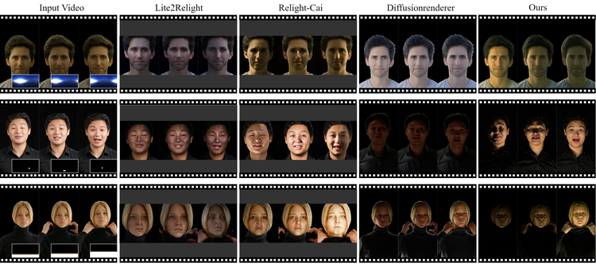
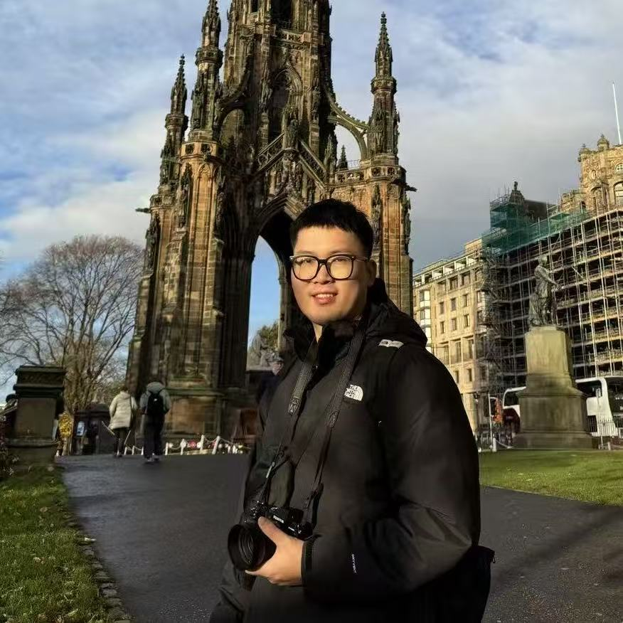
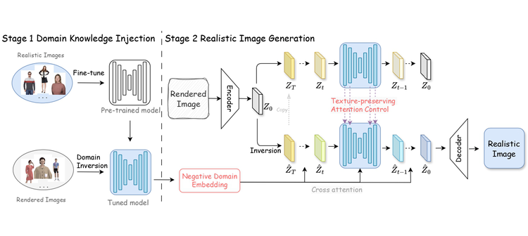
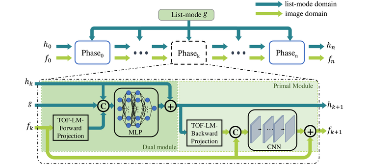
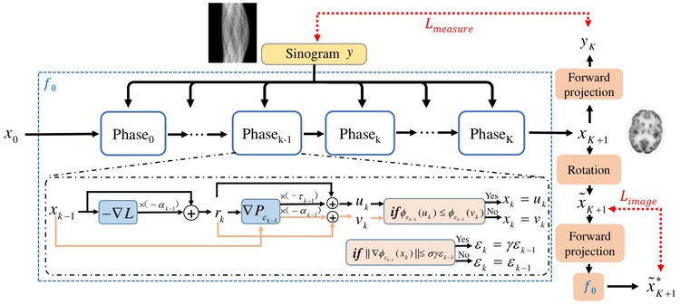
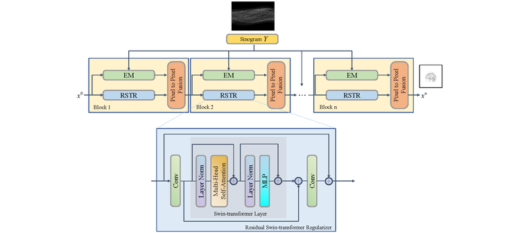

FlashRelight: Portrait Video Relighting with Dynamic Lighting
NeurIPS · 2026
Two-stage delight-then-relight framework for portrait video — dynamic lighting from envmap sequences, text, or a reference video.
I am an AIGC researcher at vivo BlueImage Lab, building on-device generative AI for flagship smartphones — including Flash Portrait 2.0, a 4K sub-second generative portrait tone-mapping pipeline shipped on the vivo X300 Ultra.
I received my Ph.D. in Information Sensor & Instrument Engineering from Zhejiang University, advised by Prof. Huafeng Liu, with the kind guidance of Prof. Yunmei Chen. During my visiting year, I worked with the CAMCA lab at Harvard Medical School / Massachusetts General Hospital, supervised by Prof. Quanzheng Li, on personalized PBPK modeling and diffusion-based medical applications. My research spans diffusion models, generative AI, and vision-language models. The line runs from inverse problems in medical imaging, through controllable generation and virtual try-on, and now converges on generative portrait relighting built for on-device deployment — where the phone's compute budget is a design constraint from day one, not an afterthought.

FlashRelight was accepted to NeurIPS 2026 — a two-stage framework that delightens a portrait video and then synthesizes dynamic lighting from envmap sequences, lighting text, or a reference video.
Q-Cache accepted to AAAI 2026 — visual attention is valuable in less than half of decode layers for multimodal LLMs; ST³ accepted to AAAI 2025 — accelerating multimodal LLMs by spatial-temporal visual token trimming.
LMPDnet — a deep unrolled primal-dual network for TOF-PET list-mode reconstruction — was published in Physics in Medicine & Biology.
Joined vivo BlueImage Lab to work on on-device AIGC — portrait relighting and flash photography. First flagship shipment: Flash Portrait 2.0 on the vivo X300 Ultra.
FashionR2R was accepted to NeurIPS 2024 — texture-preserving rendered-to-real image translation for virtual try-on with diffusion models. FALIP (foveal visual prompting for CLIP zero-shot) was presented at ECCV 2024.
PET/MR denoising work was presented at MICCAI 2024 — a volumetric conditional score-based residual diffusion model.
DULDA was presented at MICCAI 2023 — a dual-domain unsupervised learned descent algorithm for PET image reconstruction.
TransEM was presented at MICCAI 2022 — residual Swin-Transformer based regularized PET reconstruction.

NeurIPS · 2026
Two-stage delight-then-relight framework for portrait video — dynamic lighting from envmap sequences, text, or a reference video.

NeurIPS · 2024
Texture-preserving rendered-to-real translation for virtual try-on, bridging rendered fashion images and real photos with diffusion models.

Phys Med Biol · 2025
Deep unrolling of the primal-dual optimization steps to reconstruct TOF-PET images directly from list-mode data.

MICCAI · 2023
Label-free learned descent in both image and sinogram domains — trained without ground-truth images, straight from measured data.

MICCAI · 2022
Embeds a residual Swin-Transformer prior into an EM-style loop for regularized PET reconstruction with sharper details.
Delightens a portrait video first, then synthesizes dynamic lighting under three control modalities — envmap sequences, lighting text, and reference videos — trained with a hybrid static-OLAT plus generated-dynamic-clip strategy.
A diffusion-based rendered-to-real translation framework that preserves garment texture for virtual try-on, bridging the domain gap between rendered and real fashion photos.
Shows that visual attention matters in fewer than half of MLLM decode layers, and caches visual KV selectively to accelerate multimodal inference without quality loss.
Trims redundant visual tokens across spatial and temporal dimensions to speed up multimodal large language models while preserving answer quality.
Turns a small visual prompt into a foveal attention mask for CLIP, mimicking human central vision to boost zero-shot classification without fine-tuning.
Unrolls the primal-dual optimization into a trainable network that reconstructs TOF-PET images directly from list-mode events, improving resolution and quantitativeness over histogram-based pipelines.
A volumetric score-based diffusion model that conditions on MR anatomy to denoise low-dose PET, combining diffusion priors with residual learning for 3D consistency.
An unsupervised learned descent algorithm operating in both image and sinogram domains — trained without ground-truth images, directly from measured PET data.
Embeds a residual Swin-Transformer prior into an EM-style reconstruction loop, yielding regularized PET images with sharper structural detail and reduced noise.
† Equal contribution · * Corresponding author. Author lists verified against the official publisher records.
No publications in this category.
On-device AIGC models and applications, focusing on portrait relighting. Shipped Flash Portrait 2.0 — a 4K sub-second generative tone-mapping solution on flagship devices. vivo X300 Ultra →
Personalized PBPK modeling and diffusion-model applications in healthcare.
Direct-entry doctoral program. Deep-learning-based medical image reconstruction and AIGC.
Undergraduate studies; outstanding graduate of Zhejiang Province.
Questions, ideas, or just want to chat about anything — my inbox is open.